correlation_mediocristan <- function(n, rho = 0) {
# sample from multivariate normal
data <- rnorm2d(n = n, rho = rho)
# compute sample correlation
sample_correlation <- cor(data)[1,2]
sample_correlation
}
rerun(10000, correlation_mediocristan(20, 0)) %>%
unlist() -> mediocristan_correlations_20_obs
rerun(10000, correlation_mediocristan(1000, 0)) %>%
unlist() -> mediocristan_correlations_1000_obs
data.frame(sim = 1:10000, small_sample = mediocristan_correlations_20_obs,
large_sample = mediocristan_correlations_1000_obs) %>%
pivot_longer(-sim, names_to = "sample", values_to = "sample_correlation") %>%
mutate(sample = if_else(sample == "large_sample", "B: Sample with 1,000 observations",
"A: Sample with 20 observations")) -> gaussian_corrCorrelation is not correlation
To the usual phrase of correlation is not causation, Nassim Taleb often answers: correlation is not correlation. First, just like the mean and PCA, the sample correlation coefficient has persistent small sample effects when variables from Extremistan are involved. These topics are analyized in his latest book: Statistical Consequences of Fat Tails. I’ll explore this with some Monte-Carlo simulations from both Mediocristan and Extremsitan.
Secondly, however, as Taleb says, even if we are in Mediocristan, the correlation coefficient is commonly misued and/or misunderstood. Commonly misused because people take non-random subsamples and expect the same correlation. Thereby arriving at some paradoxes: Berkson’s paradox (Collider Bias) and Simpson’s Paradox. I’ll take non random subsamples from a underlying random sample to show how you can get both paradoxes. Also, it is commonly misused because Correlation should not be used when there’s a non-linear relationship between the variables; otherwise, you get deceiving results. Commonly misunderstood because the amount of information it conveys is not linear. That is, a correlation of 0.9 conveys much, much more information than 0.7. Taleb analyzes these topics in a terrific, short paper called Fooled by Correlation: Common Misinterpretations in Social “Science”
Small sample effects with Sample Correlation
Sample Correlation in Mediocristan
Let’s do some Monte-Carlo simulations in Mediocristan. I’ll be sampling from two independent gaussians; that is, we know the “true” correlation is 0 and then we will compare it with the sample-correlation.
Now we plot them:
gaussian_corr %>%
ggplot(aes(sim, sample_correlation)) +
geom_col(aes(fill = sample)) +
facet_wrap(~sample) +
hrbrthemes::theme_ipsum_rc(grid = "Y") +
scale_fill_viridis_d() +
theme(legend.position = "none") +
scale_y_continuous(limits = c(-1, 1)) +
scale_x_continuous(labels = scales::comma_format()) +
labs(title = "Sample correlations across different simulations",
subtitle = "Sample correlation quickly converges. Variables are independent",
y = "sample correlation")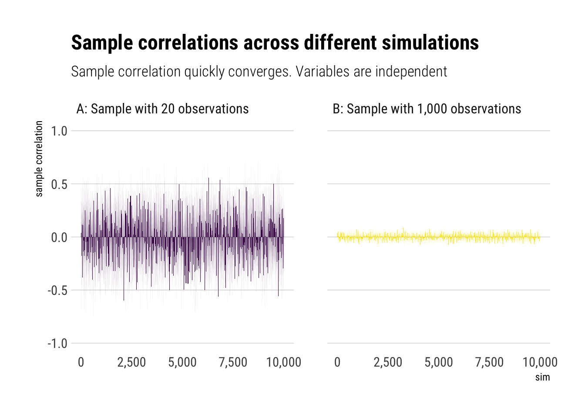
gaussian_corr %>%
ggplot(aes(sample_correlation, fill = sample)) +
geom_histogram(binwidth = 0.05, color = "black", alpha = 0.5) +
facet_wrap(~sample) +
hrbrthemes::theme_ipsum_rc(grid = "Y") +
scale_fill_viridis_d() +
theme(legend.position = "none") +
labs(title = "Distribution of Sample correlations in Mediocristan",
subtitle = "Sample correlation quickly converges. Variables are independent",
x = "sample correlation",
caption = "Histogram binwidth = 0.05")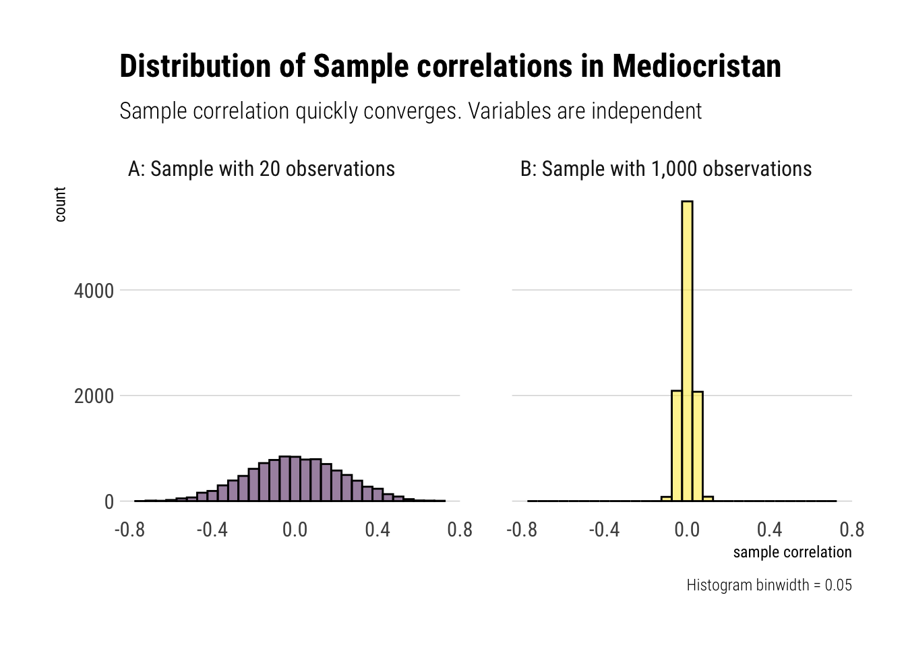
Therefore, we can use our sample correlation coefficients in Mediocristan as they quickly converge. That is, with randomness coming from Mediocristan, noise quickly washes out with relatively small sample size
Sample correlations from Extremistan
To examine the slow convergence of the sample correlation coefficient, Taleb proposes a bivariate t-student distribution with exponent 2/3. Notice that the mean and variance are undefined. Yet, there is a finite correlation. Let’s replicate the same experiment as we did in mediocristan:
correlation_bivariate_t <- function(n, rho = 0) {
# sample from multivariate normal
data <- rt2d(n, rho = rho, nu = 2/3)
# compute sample correlation
sample_correlation <- cor(data)[1,2]
sample_correlation
}
rerun(10000, correlation_bivariate_t(20, rho = 0)) %>%
unlist() -> bivariate_t_20
rerun(10000, correlation_bivariate_t(1000, rho = 0)) %>%
unlist() -> bivariate_t_thousand
data.frame(sim = 1:10000, bivariate_t_20, bivariate_t_thousand) %>%
pivot_longer(-sim, names_to = "sample_size", values_to = "sample_correlation") %>%
mutate(sample_size = if_else(sample_size == "bivariate_t_20",
"A: Sample with 20 observations", "B: Sample with 1,000 observations")) -> t_corr Now, let’s plot the results:
t_corr %>%
ggplot(aes(sim, sample_correlation)) +
geom_col(aes(fill = sample_size)) +
facet_wrap(~sample_size) +
hrbrthemes::theme_ipsum_rc(grid = "Y") +
scale_fill_viridis_d() +
theme(legend.position = "none") +
scale_y_continuous(limits = c(-1, 1)) +
scale_x_continuous(labels = scales::comma_format()) +
labs(title = "Sample correlations across different simulations",
subtitle = "Sample correlation is just as erratic, regardless of sample size. True correlation is zero. ",
y = "sample correlation")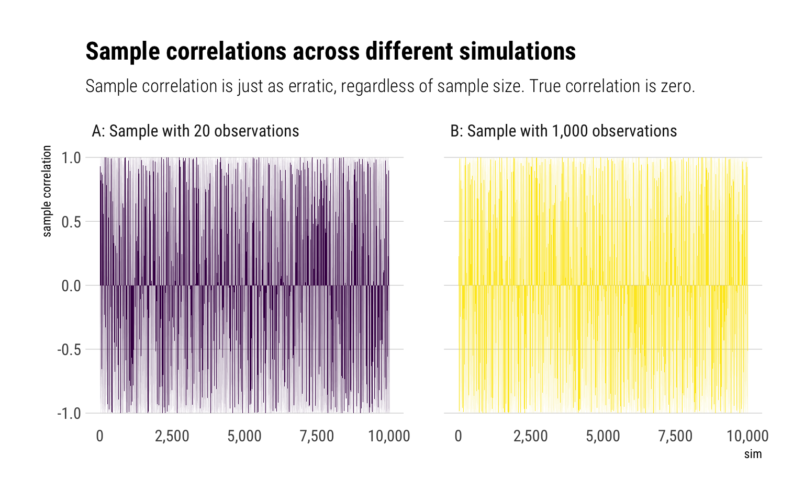
t_corr %>%
ggplot(aes(sample_correlation, fill = sample_size)) +
geom_histogram(color = "black", alpha = 0.5, binwidth = 0.05) +
facet_wrap(~sample_size) +
hrbrthemes::theme_ipsum_rc(grid = "Y") +
scale_fill_viridis_d() +
theme(legend.position = "none") +
labs(title = "Distribution of Sample correlations from Extremistan",
subtitle = "Sample correlation suffers from small sample effect. True correlation is zero.",
x = "sample correlation",
caption = "Histogram binwidth = 0.05")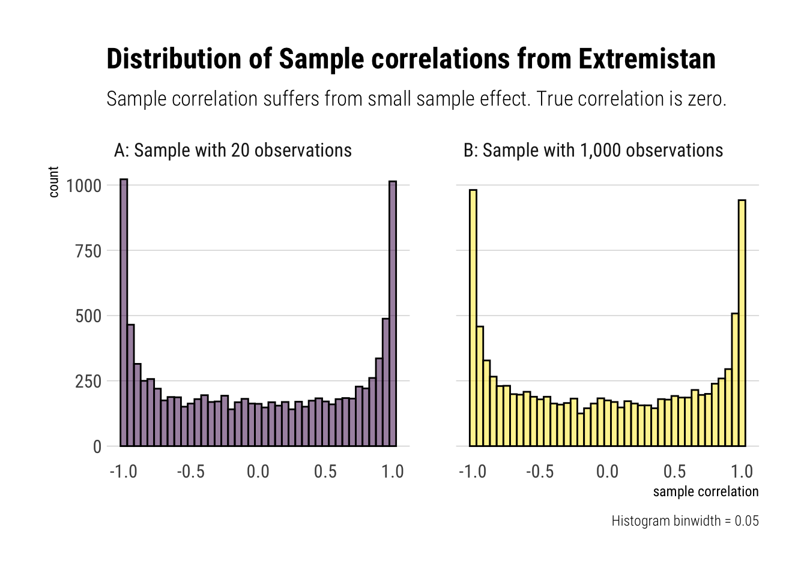
As Taleb writes: “finite correlation doesn’t mean low [estimator’s] variance: it exists, but may not be useful for statistical purposes owing to the noise and slow convergence.”
Finally, let’s experiment what happens if we make our samples 10k big:
rerun(10000, correlation_bivariate_t(10000, rho = 0)) %>%
unlist() -> bivariate_t_10kLet’s plot the results:
data.frame(sample_size_10k = bivariate_t_10k) %>%
ggplot(aes(sample_size_10k)) +
geom_histogram(color = "black", alpha = 0.5, binwidth = 0.05) +
hrbrthemes::theme_ipsum_rc(grid = "Y") +
labs(title = "Distribution of Sample correlations from Extremistan",
subtitle = "Sample (n = 10k) correlation suffers from small sample effect. True correlation is zero.",
x = "sample correlation",
caption = "Histogram binwidth = 0.05")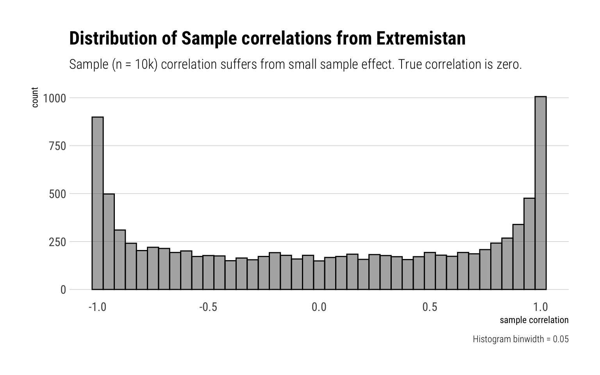
That is, the sample correlations suffers from persistent small sample effect. Thus, there’s to much noise to use the sample correlation for fat-tailed distributions.
Misused Correlation
There are two famous statistical paradoxes regarding correlation: Berkson’s paradox and Simpson’s Paradox. Both arise from the wrong expectation that the total correlation will be preserved when taking non-random subsamples. Indeed, it is quite the opposite. Taleb: “all non-random subsamples will yield a correlation below the total one”
Quadrant’s Correlation
To get some intuition about the problem, let’s sample \(10^6\) from a multivariate normal with correlation of \(0.75\). Then, we will group the data into geometrically intuitive non-random partitions: into quadrants. Then, we will calculate the correlation between the observations within each quadrant.
n <- 10^6
rho <- 3/4
data <- rnorm2d(n = n, rho = rho)
data.frame(data) %>%
rename(x = X1, y = X2) %>%
mutate(quadrant = case_when(
x > 0 & y > 0 ~ "II",
x < 0 & y > 0 ~ "I",
x < 0 & y < 0 ~ "IV",
x > 0 & y < 0 ~ "III"
)) %>%
group_by(quadrant) %>%
summarise(correlation = cor(x, y)) %>%
gt::gt() %>%
gt::fmt_number(vars(correlation))| quadrant | correlation |
|---|---|
| I | 0.19 |
| II | 0.53 |
| III | 0.18 |
| IV | 0.53 |
Therefore, we should not expect to have the same correlation in non-random subsamples of the data as we have in the whole sample.
Berkson’s paradox
In Berkson’s paradox, there appears to be a negative correlation between 2 variables in a subsample; when in fact there is no correlation between them considering the whole. The bias is introduced by sub-sampling our observations based on another variable that the 2 variables in question jointly determine. In DAG slang, it is collider bias.
Imagine, then, that we have samples from two gaussian variables that are independent.
n <- 10^4
rho <- 0
data <- rnorm2d(n = n, rho = rho)
data.frame(data) %>%
rename(x = X1, y = X2) -> data_berkson
data_berkson %>%
ggplot(aes(x, y)) +
geom_point(alpha = 0.1) +
geom_smooth(linetype = 2, color = "red", se = FALSE) +
hrbrthemes::theme_ipsum_rc() +
labs(title = "Variables are uncorrelated in the whole sample")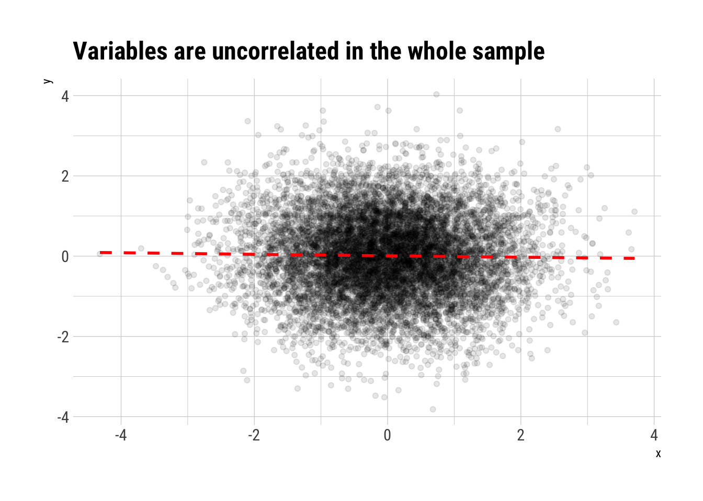
However, they jointly determine another variable \(Z\) thus: \(Z\) is zero except when either \(X\) or \(Y\) are greater than \(0\), in which case we have \(Z = 1\). Then, sampling conditioning on \(Z = 1\) is non a random subsample. Therefore, as we know that Correlation is subadditive, we know that we do not expect the same correlation as in the whole sample.
data_berkson %>%
mutate(z = if_else(x > 0 | y > 0, 1, 0))-> data_berkson_z
data_berkson_z %>%
ggplot(aes(x, y, color = factor(z))) +
geom_point(alpha = 0.1) +
geom_smooth(method = "lm", se = FALSE, linetype = 2) +
hrbrthemes::theme_ipsum_rc() +
scale_color_viridis_d(begin = 1, end = 0) +
geom_smooth(aes(x, y), linetype = 2, inherit.aes = FALSE, se = FALSE, color = "red") +
theme(legend.position = "none") +
labs(title = "Berkson's paradox: Negative relation between independent vars",
subtitle = "Correlation does weird things on non-random sub samples.",
caption = "Red line is the whole sample trend")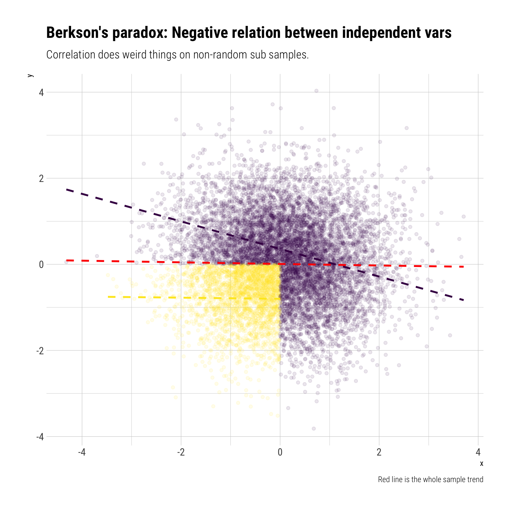
Intuitively, if we know that \(X\) is negative, due to our conditioning on \(Z\), then it must be the case that \(Y\) is positive. Therefore, conditioning on \(Z\) creates a negative correlation between two independent variables.
Therefore, if we condition on \(Z=1\), a non-random subsample (thereby opening a collider), we get a negative correlation from two independent variables: Berkson’s paradox. Again, we should not expect the global correlation to stay constant under non-random sub samples.
Simpson’s Paradox
To consider Simpson’s paradox, let’s consider 3 random variables. \(X\) is going to determine the value of \(Z\). \(X\) and \(Z\) are jointly going to determine the value \(Y\)
On the whole sample, \(X\) and \(Y\) are positively related
n <- 10000
x <- rnorm(n)
z <- rnorm(n, 1.2*x)
y <- rnorm(n, -0.8*x + z)
data.frame(x, y, z) %>%
ggplot(aes(x, y)) +
geom_point(alpha = 0.1) +
geom_smooth(se = FALSE, linetype = 2) +
hrbrthemes::theme_ipsum_rc() +
labs(title = "X and Y are positively related in the whole sample")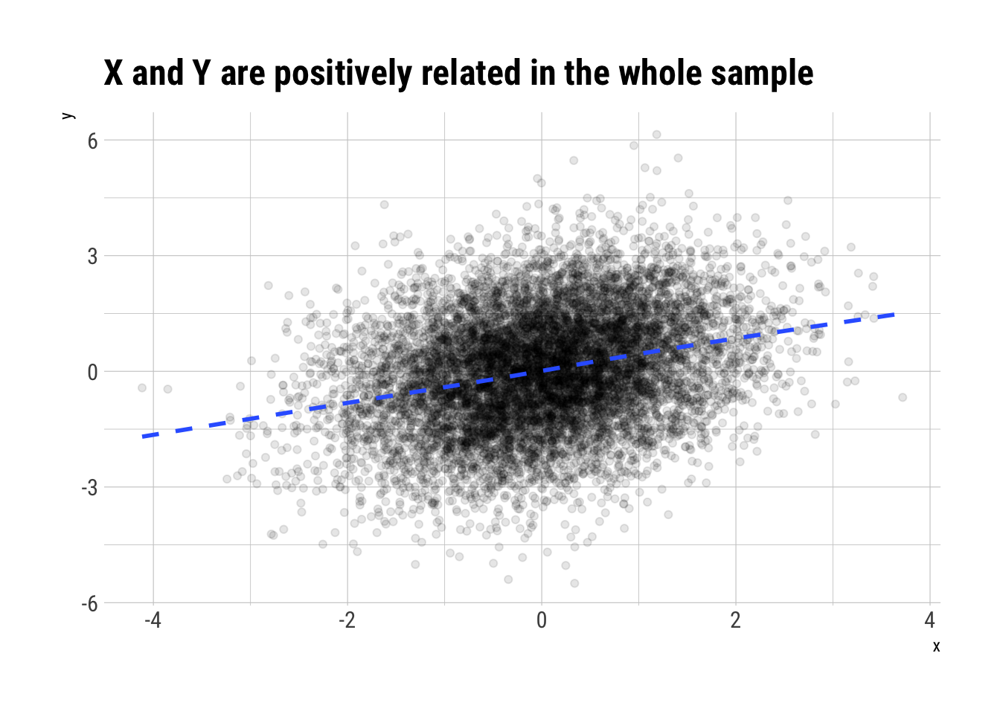
However, once we condition on \(Z\), that is, take non-random sub-samples according to the values of \(Z\), we will see a reversal of the sign of the correlation between \(X\) and \(Y\).
data.frame(x, y, z) %>%
mutate(z = cut(z, 10)) %>%
ggplot(aes(x, y, color = z)) +
geom_point(alpha = 0.1) +
geom_smooth(method = "lm", se = FALSE) +
geom_smooth(aes(x, y), linetype = 2, inherit.aes = FALSE, se = FALSE, color = "red") +
hrbrthemes::theme_ipsum_rc() +
theme(legend.position = "none") +
scale_color_viridis_d() +
labs(title = "Simpson's Paradox: Reversal of correlation sign",
subtitle = "Correlation does weird things on non-random sub samples.",
caption = "Red line is whole sample trend")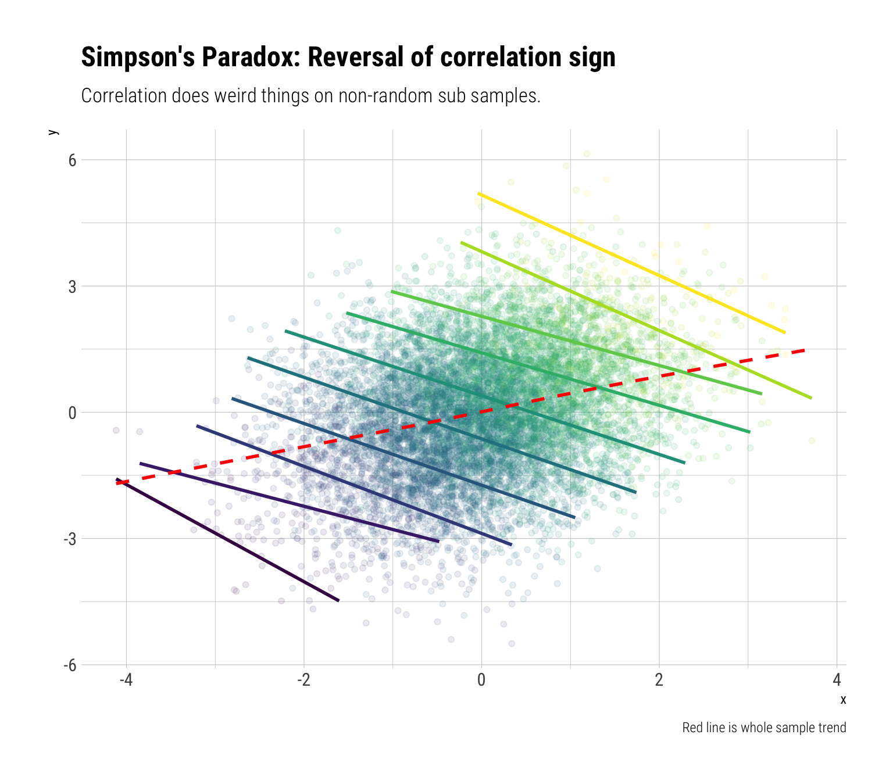
We are doing something extremely similar to what linear regression does. Once we adjust for \(Z\), what’s left is the negative effect of \(X\) on \(Y\). Again, we should not expect the global correlation to stay constant under non-random sub-samples.
Correlation under non linearities
Sometimes, the association between two variables depends on the levels of the variables themselves. That is, there is a non-linear relationship between the two variables. In these types of situations it’s a mistake to use total correlation. Taleb proposes the following experiment, which he calls “Dead Man Bias”:
You administer IQ tests to 10k people, then give them a “performance test” for anything, any task. 2000 of them are dead. Dead people score 0 on IQ and 0 on performance. The rest have the IQ uncorrelated to the performance to the performance. What is the spurious correlation IQ/Performance?
Let’s perform this thought experiment:
n <- 10000
p_dead <- 0.2
dead <- rbernoulli(n, p_dead)
performance <- runif(n)
iq <- runif(n)
performance[dead] <- 0
iq[dead] <- 0Let’s plot our results:
data.frame(iq, performance, dead) %>%
ggplot(aes(iq, performance, color = dead)) +
geom_point(alpha = 0.1) +
hrbrthemes::theme_ipsum_rc() +
labs(title = "You'll never guess a positive relationship",
subtitle = "Until you notice the dark spot at the origin") +
scale_color_viridis_d(begin = 1, end = 0) +
theme(legend.position = "bottom")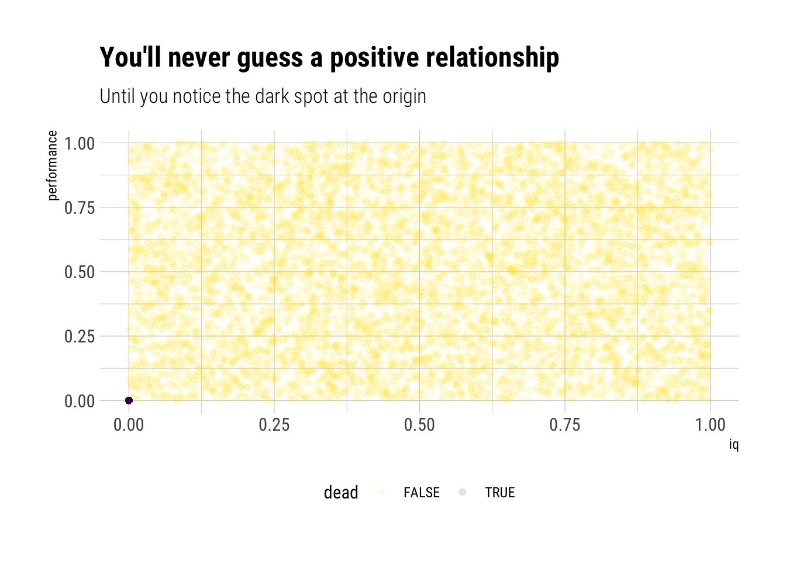
Looking at the data, you’ll never believe there’s a positive correlation. However, the dark spot in the origin changes the whole history. Let’s calculate the correlation coefficient:
cor(iq, performance)[1] 0.3849505That is, iq (in this thought experiment, at least) is not a predictor of good performance. However, it does matter: the dark spot (the dead people) fools correlation into thinking that if \(iq=0\) means \(performance=0\), then the relationship must hold for the entire range of observations. That is, the extremely non-linear relationship between iq and performance fools the correlation coefficient.
Moral of the story, never use correlation when there’s an indication of non-linear relationship between the variables.
Misunderstanding of Correlation: its signal is non linear
Although we’ve just said that correlation can only model linear relationships, it cannot be interpreted linearly. That is, the information that correlation picks up about the association between two variables does not scale linearly with correlation.
Entropy and Mutual Information
From information theory, we get a measure of the inherent uncertainty in a distribution. Information Entropy, which is just: \(-E[log(p_i)]\). Also, there is divergence: the extra uncertainity that is induced when we approximate the distribution p with the distribution q: \(E[log(\dfrac{p_i}{q_i})]\).
In the same way, there is the concept of Mutual Information: the extra uncertainity that is induced when we approximate a joint probability distribution with the product of their marginal distributions. If we don’t increase the uncertainty, then we do not lose information by modelling them independently. Therefore, it is a measure of dependence: the higher, the more dependence between the variables.
For the Gaussian case, Taleb shows that the Mutual information is:
\[ MI = -\dfrac{1}{2} log (1 - \rho^2) \]
Therefore, the information about the association between two variables that Correlation conveys does not scale linearly with the correlation coefficient. Indeed, MI has a convex response to \(\rho\):
rho <- seq(-1, 1, length.out = 100)
mutual_information = -1/2* log(1 - rho^2)
data.frame(rho, mutual_information) %>%
mutate(association = if_else(rho < 0, "negative", "positive")) %>%
ggplot(aes(rho, mutual_information, fill = association)) +
geom_area(alpha = 0.5) +
scale_fill_viridis_d() +
hrbrthemes::theme_ipsum_rc() +
theme(legend.position = "none") +
labs(subtitle = "Information conveyed by correlation does not scale linearly",
title = "Mutual information as a function of correlation",
caption = "Gaussian case",
y = "Mutual Information",
x = "correlation coefficient")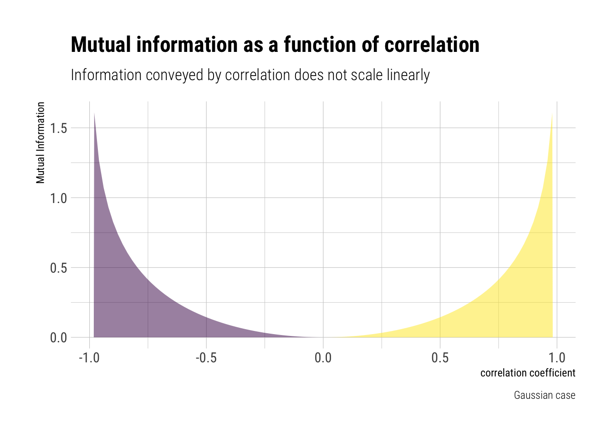
For example, the change in the information conveyed from a correlation of \(0\) to \(0.5\) is much, much smaller than a change from \(0.7\) to \(0.99\). Therefore, correlation coefficient should not be interpreted linearly.
Conclusion
As expected by now, sample correlation suffers from persistent small sample effect when the type of randomness we are dealing with comes from Extremistan. However, even if we are in Mediocristan, using and interpreting the correlation coefficient correctly is a tricky endeavour. For example, Simpson’s and Berkson’s paradoxes arise from mistakingly expecting the same correlation coefficient from the whole sample as in non-random subsamples from it. Also, non-linear relationships are, by definition, the worst case to use a correlation coefficient. Finally, the signal that correlation convey does not scale linearly with its coefficient: a correlation coefficient of 0.7 conveys much less than a coefficient of 0.9; however, a correlation 0.3 and 0.5 convey just about the same about the dependence.